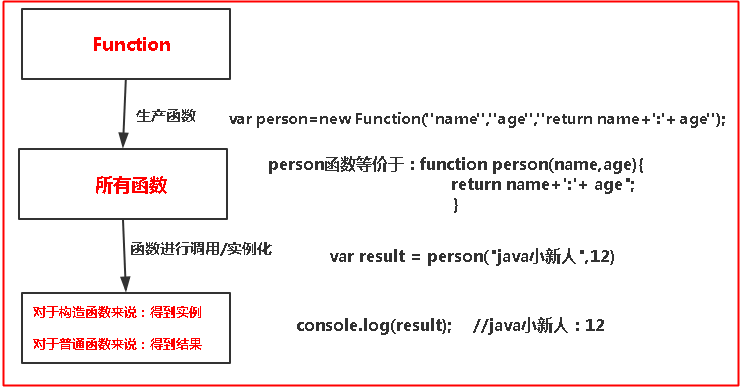
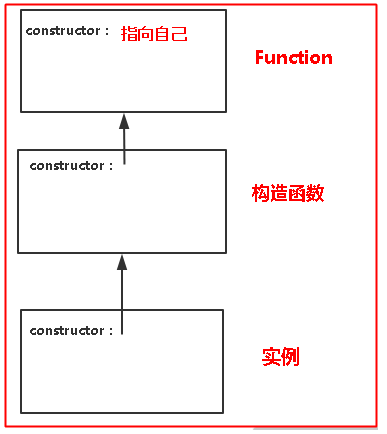
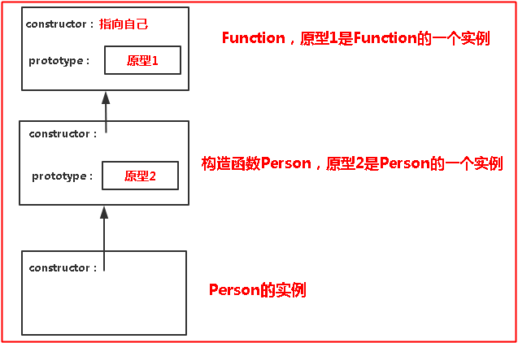
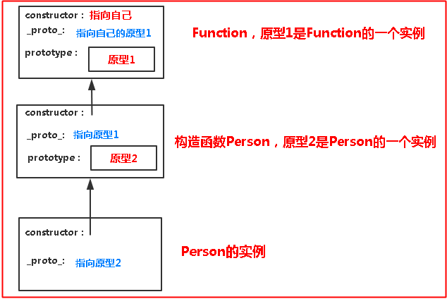
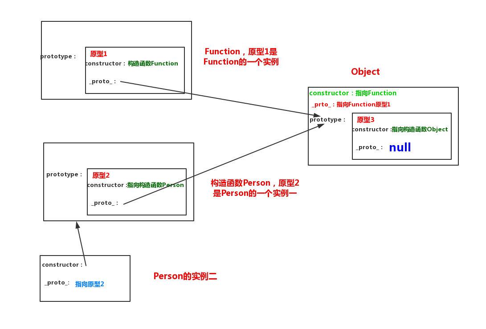

由于是个前端小白，通过这一两天的学习html，css，js和jquery等，基本上前端会用了，而且熟悉我博客的人来说，没错，我把自己的博客给优化了一下（一些大佬都是禁用模板的所有样式，然后自己设计页面布局），我的话就稍微添加了一些小插件；
比如动态雪花背景，雪花随着鼠标弹开；背景图片；鼠标点击特效文字；右上角3D相册，类似轮播图一样；统计访问博客的人的来源；小老鼠组件；个性时钟组件；背景音乐；右下角的推荐框；左下角萌萌的看板娘，还有就是将博客正文和代码的字体进行一些微调。。。。突然发现前端贼有意思，最大的感触就是定位和布局，这两个非常重要，布局可以更好模块化的开发，而定位就是将你开发出来的模块更好的展示出来，那么对于特效呢？就我而言对前端初学者其实不是特别重要吧，因为这就要靠你的编码能力和逻辑思维了！
我是前端小菜鸟，对于写特效代码不是特别会，我博客的特效就是百度随便找的，开箱即用，哈哈哈！
但是经过自己修改整个博客也学会了不少东西，这次就简单说说学习过程中学的js吧。。。
1.js构造函数基本概念
说实话我是对用函数去实例化对象用起来有点不对劲，其实这里的构造函数就相当于一个类（面向对象语言都有类，比如C++，java，C#，python等），这个类就是起到一个模板的作用；比如我们去生产零件，构造函数（或者说是类）就相当于零件的图纸，而实际生产出来的零件就是实例！显而易这种方式很好，利于扩展和减少无谓工作量，因为你只需要对图纸进行一些改进，零件也会跟着改进；（对应到代码中就是用到继承，继承中最重要的知识点就是原型，后面会说到的）；
我们简单看看js是怎么实例化对象的，随便写几种方式：
<script>
function Person(name,age){
this.name = name
this.age = function(){xxxxxx}
};
</script>
//第一种，字面量的形式，也就是直接用
var obj = {name:“小王”,age:function(){xxxxxx}}
//第二种，用new关键字，也就是要用到构造函数
var obj = new Person(xx,xx);
//第三种，先用new关键字创建一个Object空对象，然后往对象中添加新的属性
var obj = new object();
obj.name = "小王";
obj.age = function(){xxxxxx};看上面的代码我们应该关注第二行 function Person(name,age){xxxxxxx},这个函数是个什么鬼呢？和一般我们自己随便写的函数有没有什么区别呢？
第一眼看过去就是我们自己写的函数名字都是小写啊，而这里的函数首字母大写了；用法嘛，一样用，我们这个函数可以直接像我们自己定义的函数那样使用，例如var per = Person（xx,xx）;而首字母大写了的函数（下面统称为构造函数）还能创建对象，所以我们可以大概知道构造函数和普通函数应该是处于同一地位但是用法更多更灵活，那么问题来了，构造函数和普通函数是谁创造的呢？
就好像你可以根据零件图纸制造零件，但是零件图纸又是怎么来的呢？肯定有一个机器生产出来的；这里就有一个很有意思的现象，如果只看机器和图纸，那么机器应该是构造函数，图纸是实例；如果只看图纸和零件，那么图纸是构造函数，零件是实例；站在不同角度看到的就不一样，而这里的机器指的就是js中的Function，一切的函数（不管是普通的函数，构造函数还是一些内置函数）都是由这个Function生产出来的。。。。
看看一些基本的东西（就当记一下笔记，哈哈）：
js中五大基本数据类型：number，string，boolean，undefined，null；一个混个数据类型：object；
引用类型：Array，Object，Function
js中内置函数有，Date，Math，Number，Boolean，String,，Array,RegExp，Object，Function
到这里大家看一个大概的轮廓，可以看到Function生产出所有的函数，其中怎么生产出来构造函数的？在js内部做了封装，看不到，但是我们可以通过intstanceof这个方法验证：

测试如下，可以知道无论是什么函数本质上都是Function的实例，就好像我们国家有56个民族，但是本质上都是中国人啊。。。
//测试内置函数和自定义函数、自定义构造函数是不是Function实例
var person=new Function("name","age","return name+':'+ age");
控制台：person instanceof Function //true
控制台：Array instanceof Function //true,自己试试其他的内置函数
var man = function(){};
控制台：man instanceof Function //true
function Person(name,age){this.name=name;this.age=age};
控制台：Person instanceof Function //true
控制台：Function instanceof Function //true，可见Function是自己本身的一个实例，因为Function是最高层了，没有上一层了，只能是自己的实例了
这里我们重点看构造函数，普通函数就不讨论了，对于一个自定义构造函数来说，有爸爸，也有儿子，爸爸是Function，儿子是实例（注意，爸爸只能由一个，儿子可以有多个呀@_@），而且每一个身上都会有一个属性constructor，可以指向自己的构造函数，于是上面的图可以进行一些改进：

2.原型
为什么要有原型呢？上面已经说的比较清楚了，是为了能够重复的使用代码而不用每次都写一些重复的代码，那么原型放在哪里呢？它的本质又是什么呢？
很简单，原型是放在构造函数中，而且本质上就是当前构造函数的一个实例，换句话的意思就是Function和内置函数以及所有自定义构造函数都有原型！对应在代码中就是prototype属性；注意：构造函数实例没有原型的哦~~
说起来很抽象，对上面的图进行改进：

那么问题来了，没有没办法使得下一层可以直接指向上一层的原型呢？答案是有的，不管是Function、构造函数还是实例，默认都有一个自带的属性_proto_，这个属性就是可以指向上一层的原型，于是上图又可以进行一些变化：

现在我们就要看看原型的内部是什么样子了？其实上面已经说了，原型是当前构造函数的一个实例，上面图中原型2中的结构，应该就和Person的实例结构一样，里面有属性constructor和_proto_，其中constructor属性应该不多说了吧，就是指向自己的构造函数；_proto_属性指向上一层的原型，注意：这里有点不同，原型的祖先是Object，例如上图原型1和原型2都是指向Object的原型
说起来跟日了狗一样，我们继续画一个图，为了整洁，就不看原型外面的那些属性了：

是不是看着很烦，玛德，加了原型之后整个结构都不一样了，还会涉及到Object（其实js中Object是一个构造函数，也是由Function生产的，但是Object中的原型却又是最顶层的，emmm.....青出于蓝而胜于蓝么？），基本上涉及到了原型之后整个结构看起来就复杂了很多，但是也因为由此，用起来也就更灵活了，灵活的有的时候都不知道该怎么用，哈哈！
3.原型的简单用法
弄清楚了上面这些的结构之后我们再来使用原型就很简单了！举个很简单的例子;
一个普通的构造函数：
function Person(name, age) {
this.name = name;
this.age = age;
this.sayName = function() { alert(this.name+this.age) }
}
var person = new Person("java小新人","12");
person.sayName();
假如在不修改源代码的情况下，我要这个person对象添加一个helloWorld方法，你觉得怎么用比较好？有人说，很简单啊，我直接把这个构造函数一复制，马上粘贴，然后在里面添加一个helloWorld方法就可以了,emmmm....也不是说这种方式不行啊，这种方式很好啊，起码能够完成功能啊，还是很不错的！那有没有办法优化一下呢？毕竟我们知道重复的代码太多是我们不想看到的。
这个时候就是原型的出场时间了：
function Person(name, age) {
this.name = name;
this.age = age;
this.sayName = function() { alert(this.name+this.age) }
}
//运用原型，在原型中添加一个helloWorld属性
Person.prototype.helloWorld = function(){alert(this.name+"：世界，我来了！")}
var person = new Person("java小新人","12");
person.helloWorld();
上述代码在不修改源代码的前提下只添加了一行代码就完成了目标，是不是比复制粘贴好了不少，嘿嘿！
4.总结
我是搞java的，js这种前端的语言不是很熟悉（都是最近修改博客，复制别人代码的时候发现js代码看不懂，于是才有心思静下来学一下前端的东西(●´∀｀●)），也就只能根绝我查的一些资料和自己的理解，以及多敲代码测试一下写出来的文章，可能还有很多方面没说到的或者有错误的，请提示一下我去修改，哈哈哈！话说感觉学js要把整个的函数体系弄清楚学一下还是很轻松愉快的！
后面应该会说说原型链和闭包相关的东西吧！